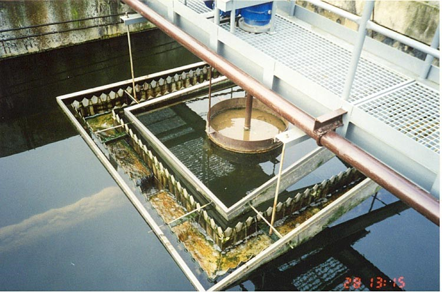
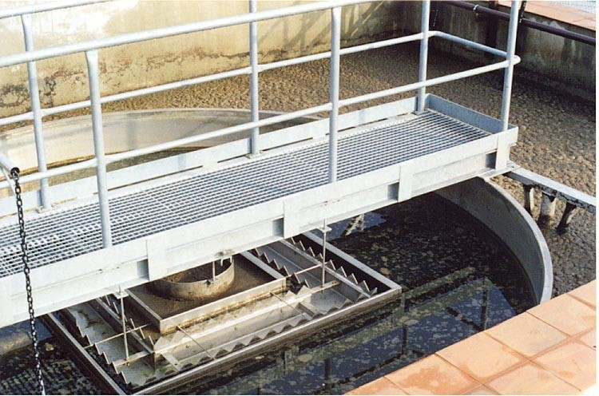
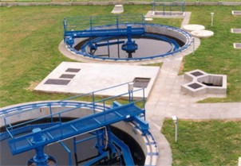
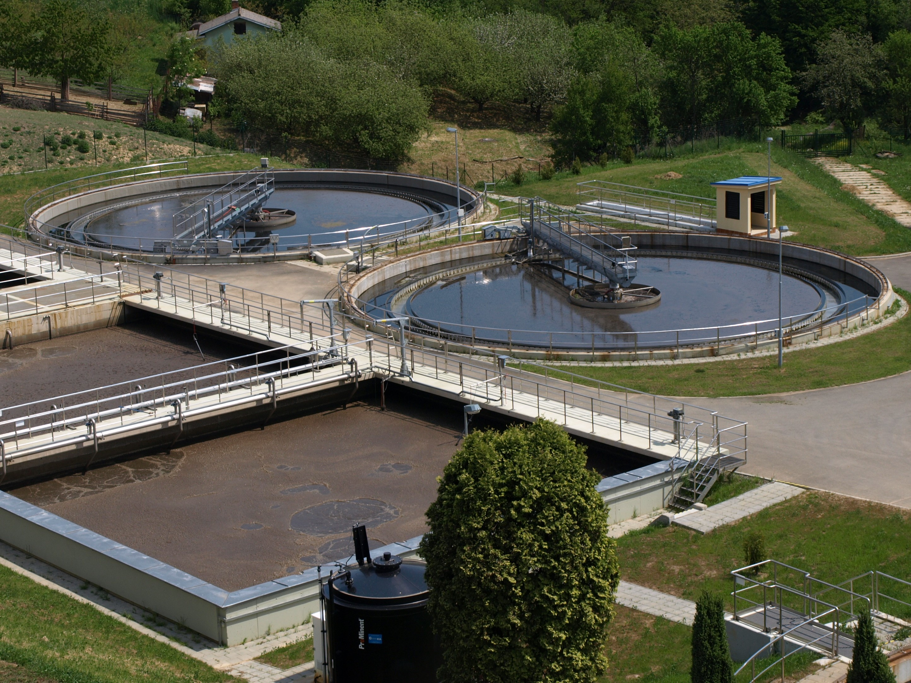
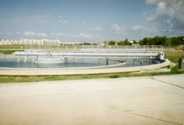
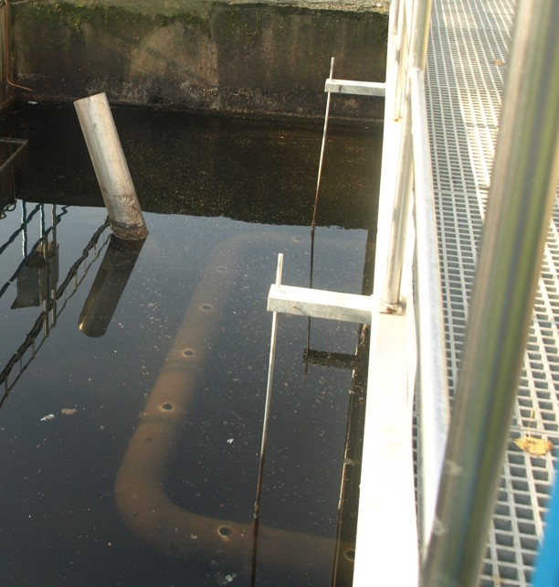
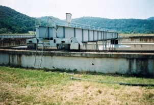
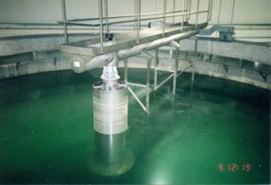

Technologie rozhoduje: Kompletní řešení pro čistírny odpadních vod a úpravny vod
EKOPROGRES HRANICE a.s. zajišťuje komplexní technologické dodávky vodohospodářských investičních celků. Vyrábíme osvědčené sedimentační nádrže, čistírny KOMBIBLOK®, strojně stírané česle a certifikované těsnění prostupů stavebními konstrukcemi LINK-SEAL®.

EKOPROGRES HRANICE a.s.
Sídlo společnosti je v Hranicích, ve městě s dlouholetou tradicí ve výstavbě vodovodů, armatur a čerpací techniky.
Tradice od roku 1903
Navazujeme na strojírenskou tradici Antonína a Huberta Pavúzkových. V historickém sídle na Třídě 1. máje 1013 působíme nepřetržitě od založení v roce 1990.
Vlastní inženýring a patenty
Vyvinuli jsme patentovaný pojezdový systém stíracích mostů s ozubeným hřebenem, aerační turbíny GIGANT-NG i modulární biologické čistírny KOMBIBLOK®.
Garance čistícího efektu
U systémů KOMBIBLOK® ručíme za dodržení odtokových parametrů po celou dobu životnosti. Provozovatelům nabízíme členství v KOMBIBLOK Klubu s trvalou technickou podporou.
Technologická zařízení pro vodní hospodářství
Kliknutím na kterékoli zařízení otevřete podrobnou technickou specifikaci, rozměrové tabulky, výkresové varianty a provozní principy.

Typ EP-KSDN / EP-KSUNKruhové sedimentační nádrže se stíracími mosty
Dosazovací a usazovací kruhové nádrže s pojezdovým mostem a pohonem s ozubeným hřebenem pro čistírny odpadních vod.
Kompaktní biologická čistírna KOMBIBLOK® NG
Ucelený stavebně-technologický celek pro 200 až 50 000 EO s minimálními nároky na zastavěnou plochu.

Typ EP-PSDN / EP-PSUN / LPPodélné sedimentační nádrže a lapáky písku
Obdélníkové usazovací nádrže s pojízdnými mosty šířky 5 až 15 metrů a jehlanovými kalovými jímkami.

Typ SH-K / SH-LStrojně stírané česle typu SH a lapáky písku
Automatické strojní česle pro záchyt a vynesení hrubých nečistot z přítokových kanálů ČOV a MVE.

Modely LS 200 až LS 650Certifikované modulární těsnění LINK-SEAL®
Originální elastomerové řetězové těsnění prostupů potrubí stavebními konstrukcemi proti vodě a plynu.

Výkony 1,5 až 30 kWPovrchové aerační turbíny GIGANT - NG
Vysokoúčinné mechanické aerátory pro provzdušňování aktivačních nádrží a oxidaci odpadních vod.

Technologie úpravy vodyÚpravny pitné a průmyslové vody, vodojemy
Kompletní technologické vystrojení úpraven vod, armaturních komor, rychlofiltrů a dávkování chemikálií.

Typ EP-VkDN / EP-VSDNVertikální čtvercové a kruhové nádrže
Dortmundské beznapěťové sedimentační nádrže bez pohyblivých částí a motorového pohonu.

Kalkulátor kapacity čistírny KOMBIBLOK®
Zvolte předpokládaný počet ekvivalentních obyvatel – kalkulátor vám doporučí přesný typový model řady NG 1 až NG 8 s hydraulickými i aeračními parametry.
Originální modulární těsnění LINK-SEAL®
Špičkové těsnění prostupů technologického potrubí stavebními konstrukcemi čistíren, nádrží a armaturních komor.
Hydrostatický tlak až 50 m
Pryžové elastomerové bloky stlačované nerezovými šrouby garantují absolutní vodotěsnost a plynotěsnost prostupu.
Tlumič vibrací a hluku
Elastické uložení izoluje chvění od čerpadel a kompresorů, čímž chrání stavební konstrukce před praskáním.
Materiálové varianty
EPDM pro pitnou a odpadní vodu, Nitril pro ropné látky a silikonové směsi pro vysoké teploty až do 200 °C.
Kontaktní a poptávkové centrum
Odborníci z EKOPROGRES HRANICE a.s. vám pomohou s projektem, studií proveditelnosti i dodávkou technologie.
EKOPROGRES HRANICE a.s.
Třída 1. máje 1013
753 01 Hranice I - Město
Česká republika
Přímé kontakty
Nezávazná technologická poptávka
Vyplňte základní údaje k záměru, zpracujeme technický návrh.